Entity-Relationship Model¶
5.1 Entity Sets¶
5.1.1 Entity Sets¶
- The real world can be modeled as:
- A collection of ==entities (实体) ==
- Relationships (联系) among entities
- An entity is an object that exists and is distinguishable from other objects.
—— An entity may be concrete, or abstract.- Example: specific student, company, event, plant.
- Entities have attributes (属性)
- Example: student has id, name, age, sex, and address.
- An entity set is a set of entities of the same type that share the same properties.
- Example: set of all students, companies, trees, holidays, customers, accounts, loans.
5.1.2 Attributes¶
- An entity is represented by a set of attributes, that is descriptive properties possessed by all members of an entity set.
- Domain (域, value set) –– the set of permitted values for each attribute.
- Attribute types:
- Simple and composite attributes (简单和复合属性，如 sex, name).
- Single-valued and multi-valued attributes (单值和多值属性).
- E.g., multivalued attribute: phone-numbers (多个电话号码).
- Derived attributes (派生属性).
- Can be computed from other attributes, e.g., age, given date of birth.
- versus base attributes or stored attributes (基属性，存储属性).
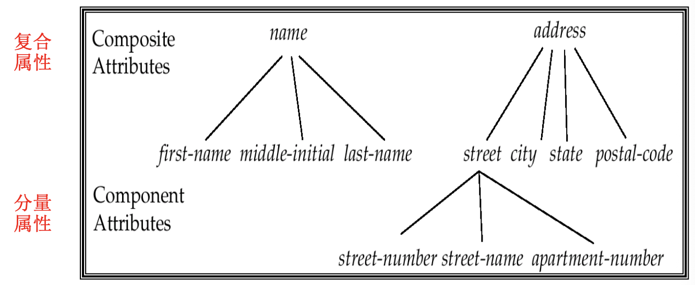
5.2 Relationship Sets¶
A relationship is an association among several entities (是二个或多个不同类实体之间的关联).
- A relationship set is a set of relationship of the same type.
- Example:
borrower(customer-name, loan-number)
- Example:
- 一个联系集包含多个同类联系 (或联系实例, relationship instance)
- 一个联系集表示二个或多个实体集之间的关联
Formally, a relationship set is a mathematical relation among \(n\geq 2\) entities, each taken from entity sets
where \((e_1, e_2, \dots, e_n)\) is a relationship, \(E_i\) is an entity set
Relationship Set
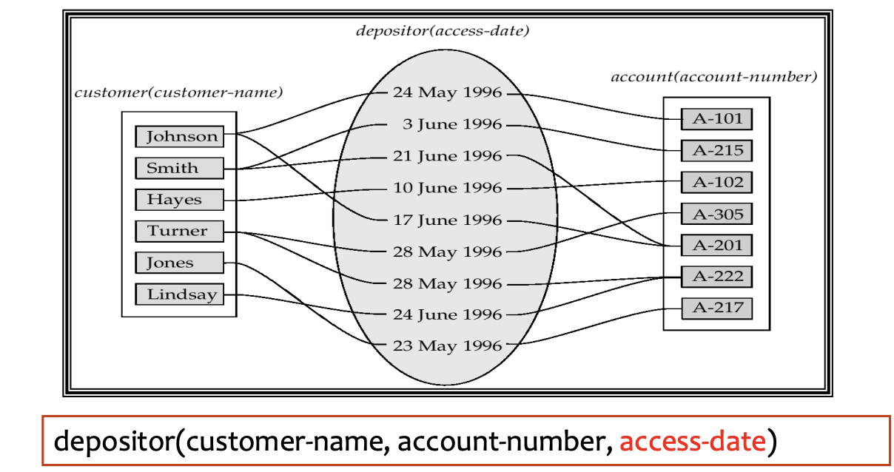
- An attribute can also be the property of a relationship set.
- For instance, the depositor relationship set between entity sets customer and account may have the attribute access-date.
5.2.1 Degree of a Relationship Set¶
Refers to the number of entity sets that participate in a relationship set.
- Relationship sets that involve two entity sets are binary (or degree two).
- Relationship sets may involve more than two entity sets.
- Relationships between more than two entity sets are rare. Most relationships are binary. (More on this later.)
5.2.2 Mapping Cardinalities¶
Express the number of entities to which another entity can be associated via a relationship set. (一个联系集中，一个实体可以与另一类实体相联系的实体数目。其中数目是指最多一个还是多个)
- Most useful in describing binary relationship sets.
- For a binary relationship set the mapping cardinality must be one of the following types:
- One to one \((1 : 1)\)，如：就任总统（总统，国家）
- One to many \((1 : n)\)，如：分班情况（班级，学生）
- Many to one \((n : 1)\)，如：就医（病人，医生）
- Many to many \((n : m)\)，如：选课（学生，课程）
5.3 Keys¶
5.3.1 Keys for Entity Sets¶
- A super key of an entity set is a set of one or more attributes whose values uniquely determine each entity.
- A candidate key of an entity set is a minimal super key.
- Although several candidate keys may exist, one of the candidate keys is selected to be the primary key.
- Example: customer(cus-num, cus-name, cus-street, cus-city)
- Candidate key: cus-num
- Super key: {cus-num}, {cus-num, cus-name}, {cus-num, …}
5.3.2 Keys for Relationship Sets¶
- The combination of primary keys of the participating entity sets forms a super key of a relationship set (参与一个联系集的各实体集的码的组合，构成该联系集的超码).
(customer-id, loan-number)is the super key of borrower(sid, cid)is the super key of enrolled- Note: this means a pair of entity can have at most one relationship in a particular relationship set.
- Must consider the mapping cardinality of the relationship set when deciding what are the candidate keys \((1:1, 1: n, m:n)\).
- 某些多对一的组合候选码只需要一个属性，有的需要两个组合在一起
- Need to consider semantics(语意) of relationship set in selecting the primary key in case of more than one candidate key
- e.g. 作为码的属性不能为空，值不应常变.
5.4 E-R Diagram¶
5.4.1 E-R Diagrams¶
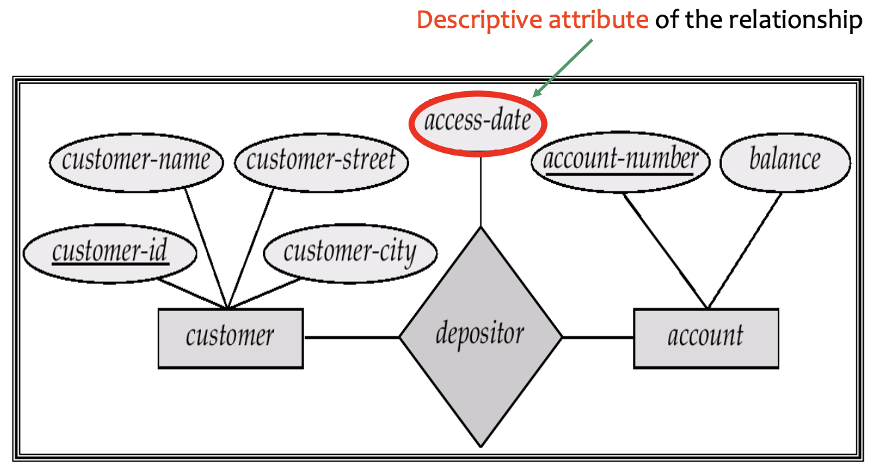
- Rectangles represent entity sets.
- Diamonds represent relationship sets.
- Lines link attributes to entity sets and entity sets to relationship sets.
- Ellipses represent attributes.
- Double ellipses represent multivalued attributes.
- Dashed ellipses denote derived attributes.
- Underline indicates primary key attributes.
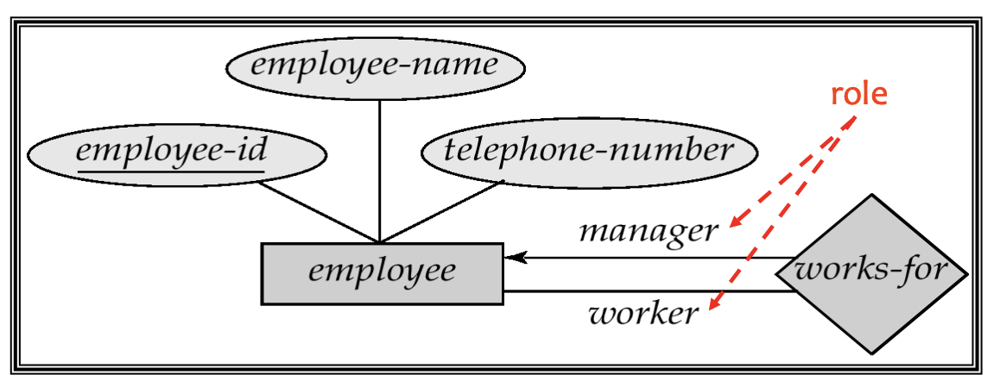
- Entity sets of a relationship need not be distinct, e.g., Recursive relationship set (自环联系集).
- Role: the function that an entity plays in a relationship, e.g., the labels “manager” and “worker” are called roles; they specify how employee entities interact via the works-for relationship set.
- Role labels are optional, and are used to clarify semantics of the relationship.
5.4.2 Express the Cardinality Constraints¶
- We express cardinality constraints by drawing either a directed line (\(\rightarrow\)), signifying “one”, or an undirected line (\(—\)), signifying “many”, between the relationship set and the entity set.
One-To-One Relationship¶
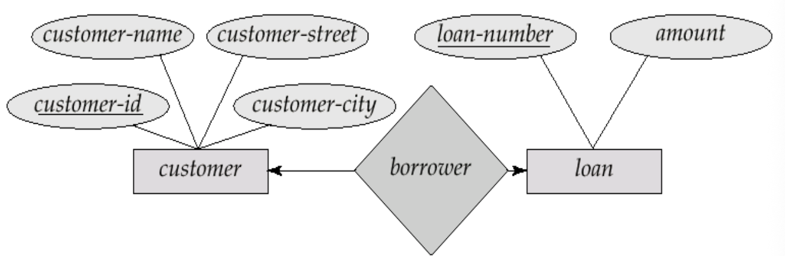
- A customer is associated with at most one loan via the relationship borrower.
- A loan is associated with at most one customer via borrower.
One-To-Many Relationship¶
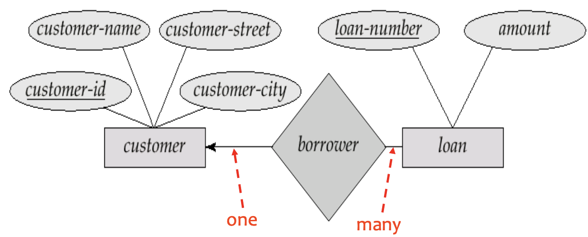
- A loan is associated with at most one customer via borrower.
- A customer is associated with several (including 0) loans via borrower.
Many-To-One Relationship¶
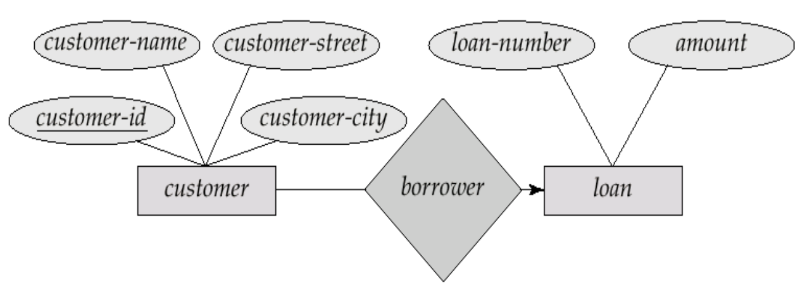
- A loan is associated with several (including 0) customers via borrower.
- A customer is associated with at most one loan via borrower.
Many-To-Many Relationship¶
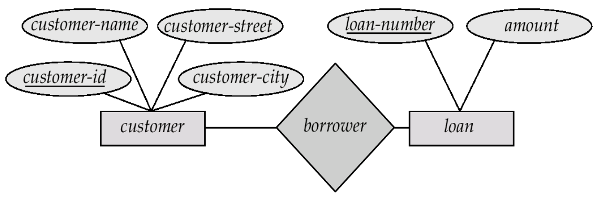
- A customer is associated with several (possibly 0) loans via borrower.
- A loan is associated with several (possibly 0) customers via borrower.
5.4.3 Participation of an Entity Set in a Relationship Set¶
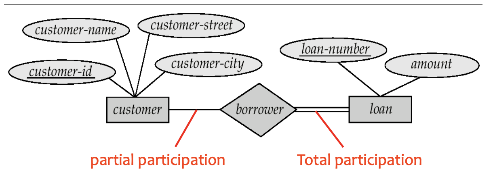
- Total participation (全参与) (indicated by double line): every entity in the entity set participates in at least one relationship in the relationship set.
- E.g., participation of loan in borrower is total.
- Every loan must have a customer associated to it via borrower.
- Partial participation (部分参与): some entities may not participate in any relationship in the relationship set.
- E.g., participation of customer in borrower is partial.
Alternative Notation for relationship Constraints
- Alternative notation for cardinality constraints and participation constraints.
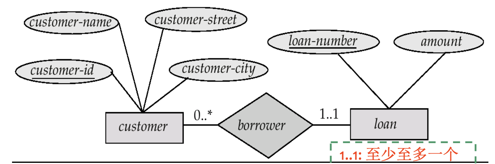
5.4.4 Binary vs. Non-Binary Relationships¶
E-R Diagram with a Ternary Relationship¶
一个银行职员在多个支行兼职，并承担不同类型的工作。
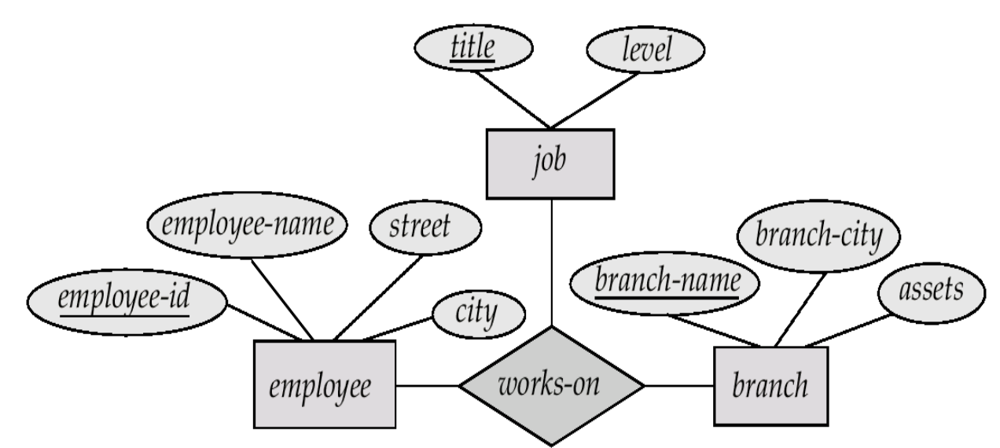
- Some relationships that appear to be non-binary may be better represented using binary relationships.
- E.g., a ternary relationship parents, relating a child to his/her father and mother, is best replaced by two binary relationships, father and mother.
e.g., parents (he, she, child) => father (he, child), mother (she, child) - Using two binary relationships allows partial information,
e.g., only mother being know. - But there are some relationships that are naturally non-binary,
e.g., works-on (employee, branch, job).
- E.g., a ternary relationship parents, relating a child to his/her father and mother, is best replaced by two binary relationships, father and mother.
Converting Non-Binary Relationships to Binary Form¶
- In general, any non-binary relationship can be represented using binary relationships by creating an artificial entity set.
- Replace non-binary relationship \(R\) between entity sets \(A\), \(B\), and \(C\) by an entity set \(E\), and three new relationship sets.
- Create a special identifying attribute for \(E\).
- Add any attributes of \(R\) to \(E\).
- For each relationship \((a_i , b_i , c_i )\) in \(R\), create \(R_A, R_B, R_C\).
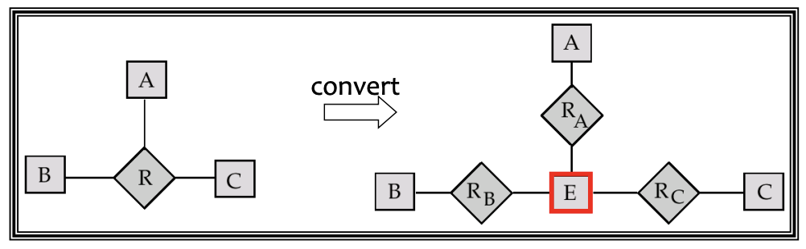
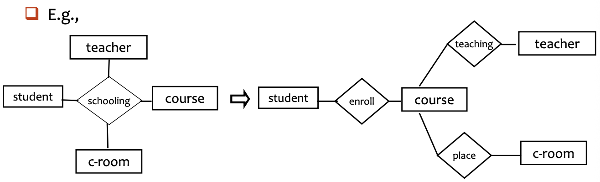
5.5 Weak Entity Sets¶
An entity set that does not have a primary key is referred to as a weak entity set.
- E.g., 还贷登记表
payment (pay-num, pay-date, pay-amount). - 假设为了清楚起见，pay-num 按对应的每项贷款分别编号 (都从 \(1, 2, 3,\dots\) 开始), 这样，pay-num 就不是码，并且该实体集没有码。故 payment 是弱实体集。
- pay-num is discriminator or partial key (分辨符或部分码).
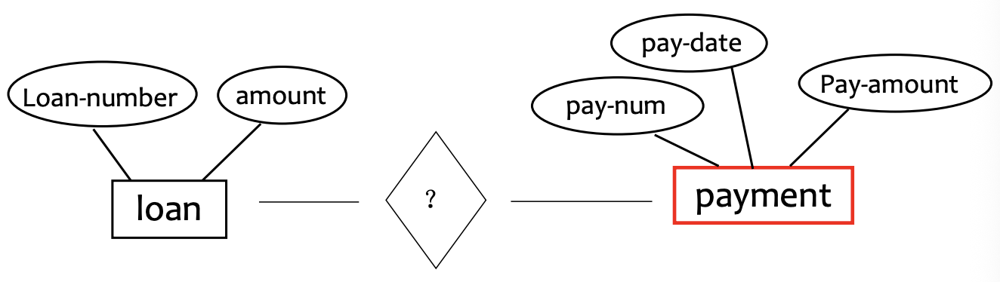
- The existence of a weak entity set depends on the existence of a identifying entity set or owner entity set (标识实体集或属主实体集).
- E.g.,
loan (loan-num, amount)is an identifying entity set. - It must relate to the identifying entity set via a total, one-to-many relationship set from the identifying to the weak entity set.
- E.g.,
- The related relationship is called identifying relationship (标识性联系)
- E.g., loan-payment
Example
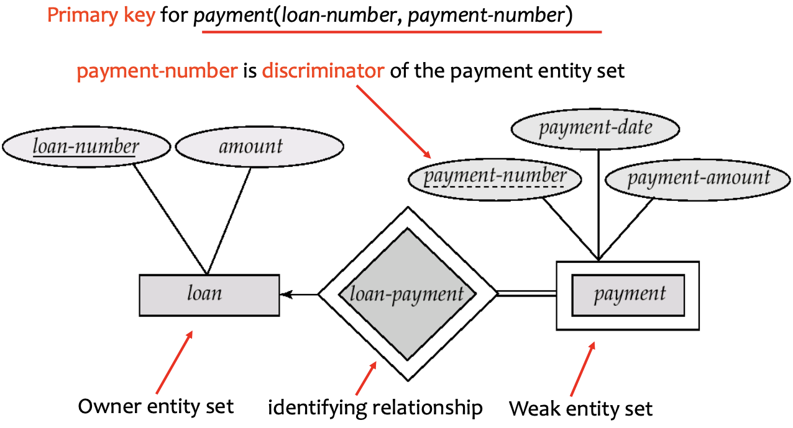
- The discriminator or partial key (分辨符或部分码) of a weak entity set is the set of attributes that distinguishes among all those entities in a weak entity set that depend on one particular strong entity (e.g., payment-number).
- The primary key of a weak entity set is formed by the primary key of the strong entity set on which the weak entity set is existence dependent, plus the weak entity set’s discriminator.
Note
在进行概念设计（画E-R图）时，要保持模型的纯粹性。弱实体集就应该保持“弱”的状态，不要把强实体的主码塞给它，而是让它们纯粹依靠“标识性联系”来绑定。这样既表达了依赖关系，又避免了模型上的语义重复
- Note: the primary key of the strong entity set is not explicitly stored with the weak entity set, since it is implicit in the identifying relationship.
- If loan-number were explicitly stored, payment could be made a strong entity, but then the relationship between payment and loan would be duplicated by an implicit relationship defined by the attribute loannumber common to payment and loan.
5.6 Extended E-R Features¶
Summary of Symbols Used in E-R Notation
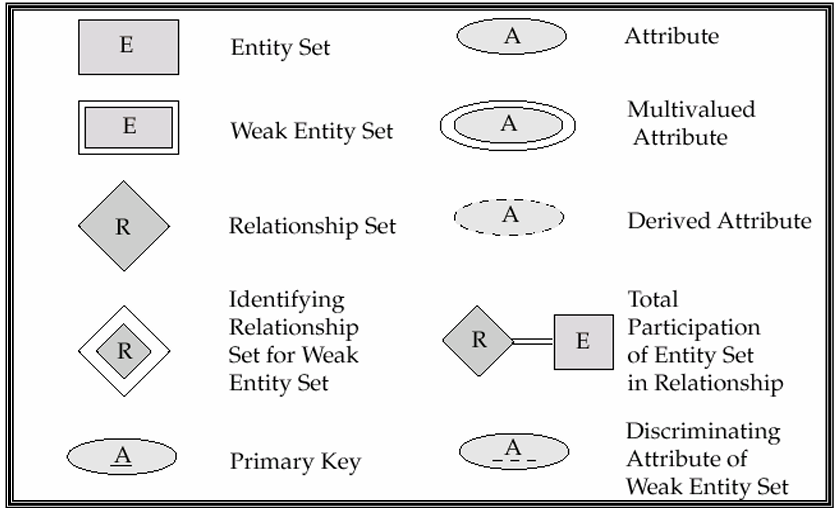
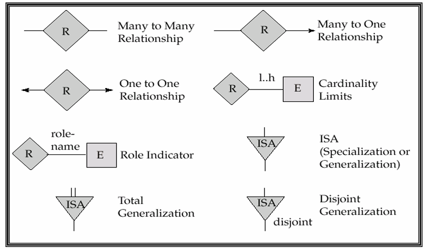
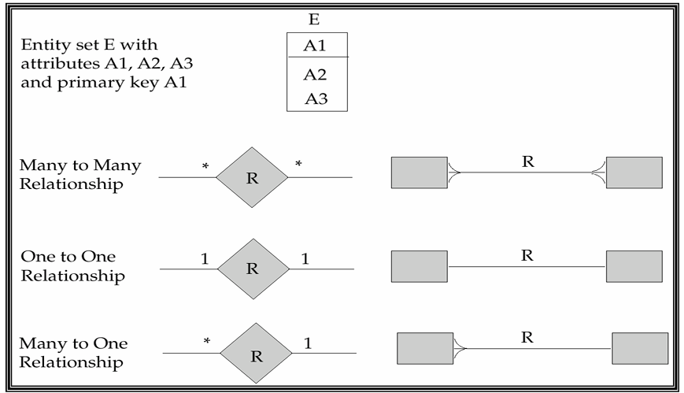
5.6.1 Stratum of the entity set¶
- Specialization (特殊化、具体化)
- Top-down design process; 在一个已有的高层实体集中，划分出具有显著区别的子分组（subgroup，即低层实体集）。这些低层实体集拥有自己专属的属性，或者参与某些高层实体集并不适用的特定联系
- Attribute inheritance – 低层实体集会自动继承与之相连的高层实体集的所有属性，以及高层实体集所参与的所有联系
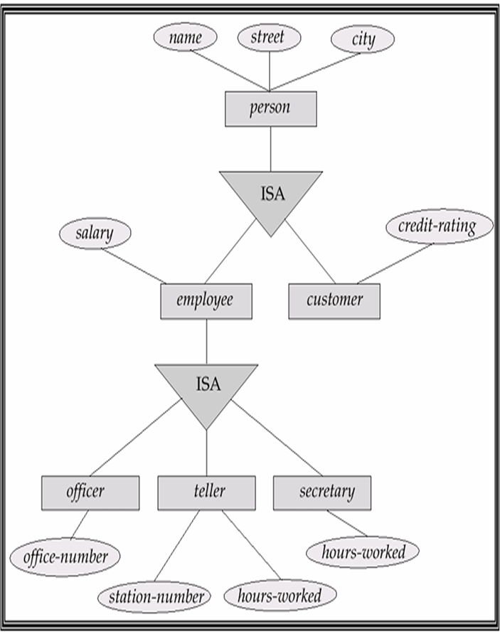
- Generalization (泛化、普遍化)
- A bottom-up design process – 当设计者发现多个现存的实体集共享许多相同的特征（属性）时，可以将它们的共性提取出来，合并成一个更高层次的实体集
- Specialization and generalization are simple inversions of each other; they are represented in an E-R diagram in the same way.
- The terms specialization and generalization are used interchangeably.
5.6.2 Design Constraints¶
- 成员资格约束(Constraint on membership)：决定一个实体如何被划入某个特定的低层实体集（子分组）中
- Condition-defined：取决于是否满足某个特定的客观条件
- E.g., (1) All customers over 65 years are members of senior-citizen entity set; senior-citizen ISA person; (2) account to saving account or saving accounts.
- User-defined：用户在业务层面人为指定
- e.g., employee to teams
- Condition-defined：取决于是否满足某个特定的客观条件
- 重叠性约束(Constraint on overlapping)：决定在同一个泛化/特殊化结构中，一个高层实体是否可以同时属于多个低层实体集
- Disjoint (不相交)
- An entity can belong to only one lower-level entity set.
- Noted in E-R diagram by writing disjoint next to the ISA triangle.
- Overlapping (可重叠)
- An entity can belong to more than one lower-level entity set.
- E.g.,
- Disjoint (不相交)
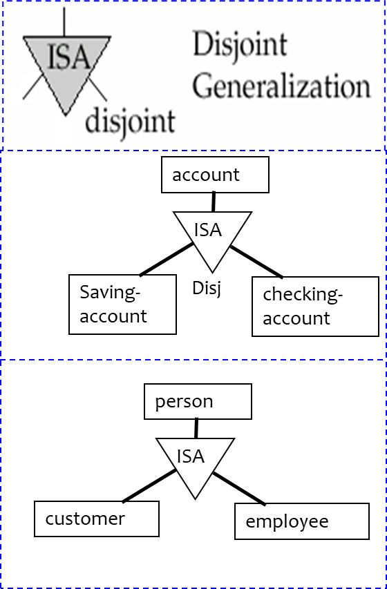
- 完全性约束(Completeness constraint)：明确了高层实体集中的每一个实体，是否必须从属于下方的某个子类
- Total：高层实体集中的每一个实体，都必须属于至少一个低层实体集
- Partial：高层实体集中的实体，不一定要属于任何低层实体集。这意味着系统允许存在只属于父类、但不具备任何子类独有特征的实体。
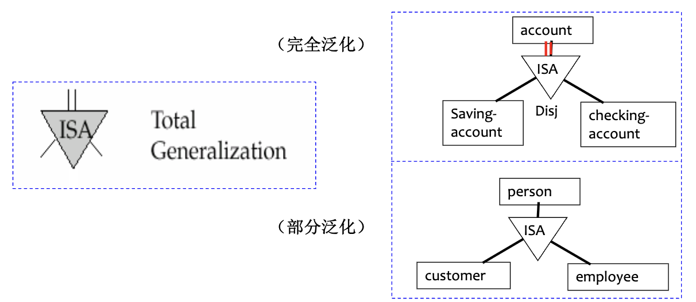
5.6.3 Aggregation¶
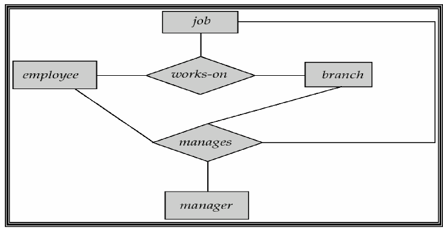
- Relationship sets works-on and manages represent overlapping information.
- Every manages relationship corresponds to a works-on relationship.
- However, some works-on relationships may not correspond to any manages relationships.
- So we can’t discard the works-on relationship.
- Eliminate this redundancy via aggregation.
- Treat relationship as an abstract entity.
- Allows relationships between relationships.
- Abstraction of relationship into new entity.
- Without introducing redundancy, the following diagram represents:
- An employee works on a particular job at a particular branch.
- An employee, branch, job combination may have an associated manager.
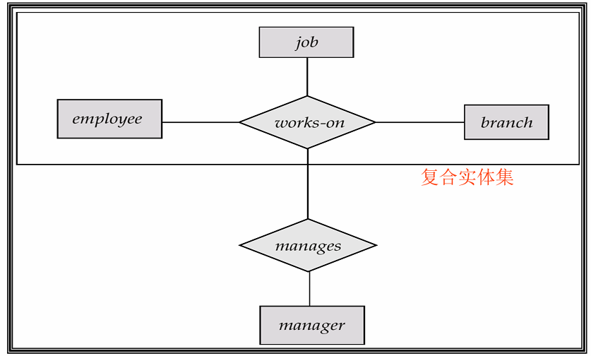
5.7 Design of an E-R Database Schema¶
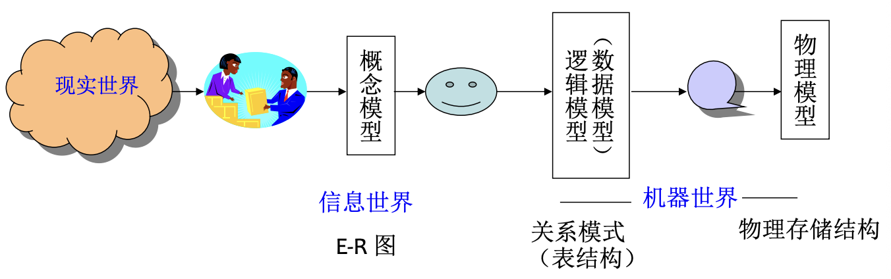
Requirment analysis
- What data, applications, and operations needed.
Conceptual database design
- A high-level description of data, constraints using E-R model or a similar high level data model.
Logical database design
- Convert the conceptual design into DB schema --- tables
- Schema refinement: Normalization of relations --- Check relational schema for redundancies and related anomalies.
Physical database design
- Indexing, clustering and database tuning.
E-R Design Decisions¶
(1) Use an attribute or entity set to represent an object?
- E.g.1: employee (emp-id, emp-name, …, phone)
- 优点：简单
- 缺点：多个电话怎么处理？电话的其他属性？
- E.g.2: employee (emp-id, emp-name, …);
phone (phone-num, location, type, color);
emp-phone (emp-id, phone-num)- 若一个对象只对其名字及单值感兴趣，则可作为属性，如性别；若一个对象除名字外，本身还有其他属性需描述，则该对象应定义为实体集。如电话, 部门
- 一个对象不能同时作为实体和属性
- 一个实体集不能与另一实体集的属性相关联，只能实体与实体相联系
(2) Use it as an entity set or a relationship set?
- E.g., enrolled, borrower, depositor
- Relationship set --- to describe an action that occurs between entities (二个对象之间发生的动作 --- 用“relationship set”表示).
- The mapping cardinality will effect the matter.
Considering the branch, loan, customer, …
(3) Use it as an attribute of an entity or a relationship?
- e.g., student (sid, name, sex, age, …, supervisor-id, supervisor-name, supervisor position, …, class, monitor)
- 要从对象的语义独立性和减少数据冗余方面考虑
student(sid, name, sex, age, ...);
supervisor (sup-id, name, position, ...);
class (classno, specialty, monitor, stu-num);
stu-class (sid, classno);
stu-sup (sid, sup-id, from, to);
(4) The use of a ternary or n-ary relationship versus a pair of binary relationships.
*(5) The use of a strong or weak entity set.
*(6) The use of specialization/generalization – contributes to modularity in the design (有助于模块化).
*(7) The use of aggregation – can group a part of E-R diagram into a single entity set, and treat it as a single unit without concern for the details of its internal structure.
5.8 Reduction of an E-R Schema to Table¶
- Converting an E-R diagram to a table format is the basis for deriving a relational database design from an E-R diagram.
- A database which conforms to an E-R diagram can be represented by a collection of tables
- For each entity set and relationship set, there is a unique table which is assigned the name of the corresponding entity set or relationship set.
5.8.1 Representing Entity Sets as Tables¶
强实体集 (Strong Entity Sets) 的转换：A strong entity set => a table with the same attributes.
- Composite attributes are flattened out by creating a separate attribute for each component attribute.
- A multivalued attribute \(M\) of an entity \(E\) is represented by a separate table \(EM\)
弱实体集 (Weak Entity Sets) 的转换：A weak entity set becomes a table that includes a column for the primary key of the identifying strong entity set.
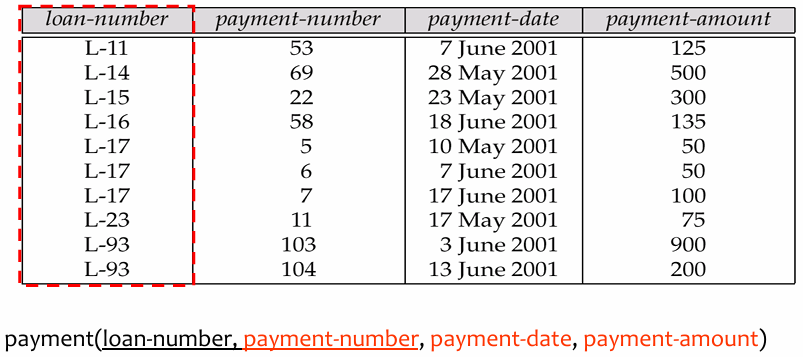
联系集 (Relationship Sets) 的转换：A relationship set is represented as a table with columns for the primary keys of the two participating entity sets, (which are foreign keys here) and any descriptive attributes of the relationship set itself.
- Many-to-Many：生成的表的主码是参与联系的所有实体集主码的组合。
例如borrower(customer-id, loan-number)。 - Many-to-One / One-to-Many：生成的表的主码是位于“多”（Many）那一端实体集的主码
- One-to-One：参与联系的任何一端实体的主码都可以作为该表的候选码
5.8.2 Redundancy of Tables¶
- Many-to-one and one-to-many relationship sets that are total on the many-side can be represented by adding an extra attribute to the “many” side, containing the primary key of the one side（对 \(1: n\) 联系，可将“联系”所对应的表，合并到对应“多”端实体的表中）
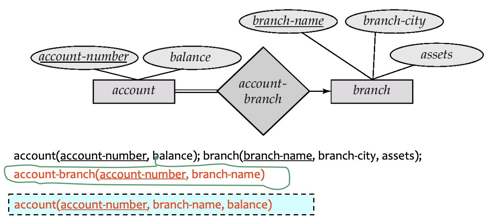
- If participation is partial on the many side, replacing a table by an extra attribute in the relation corresponding to the “many” side could result in null values.
- E.g., cust-banker(customer-id, employee-id, type); 但有的 customer 没有 banker, 则合并之后得：Customer(customer-id, cust-name, cust-street, cust-city, banker-id, type)，导致 Customer 中有些元组的 banker-id、 type 为 null)。
- For one-to-one relationship sets, either side can be chosen to act as the “many” side
- That is, extra attribute can be added to either of the tables corresponding to the two entity sets.
- The table corresponding to a relationship set linking a weak entity set to its identifying strong entity set is redundant (联系弱实体集及其标识性实体集的联系集对应的表是冗余的，即对应 identifying relationship 的表是多余的。).
- E.g., The payment table already contains the information that would appear in the loan-payment table (i.e., the columns loan-number and payment-number).
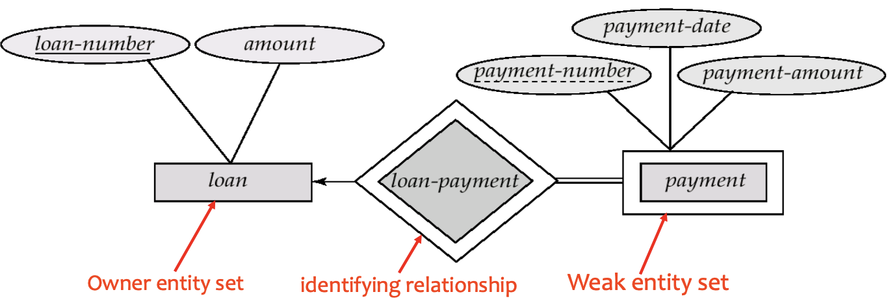
5.8.3 Representing Specialization as Tables¶
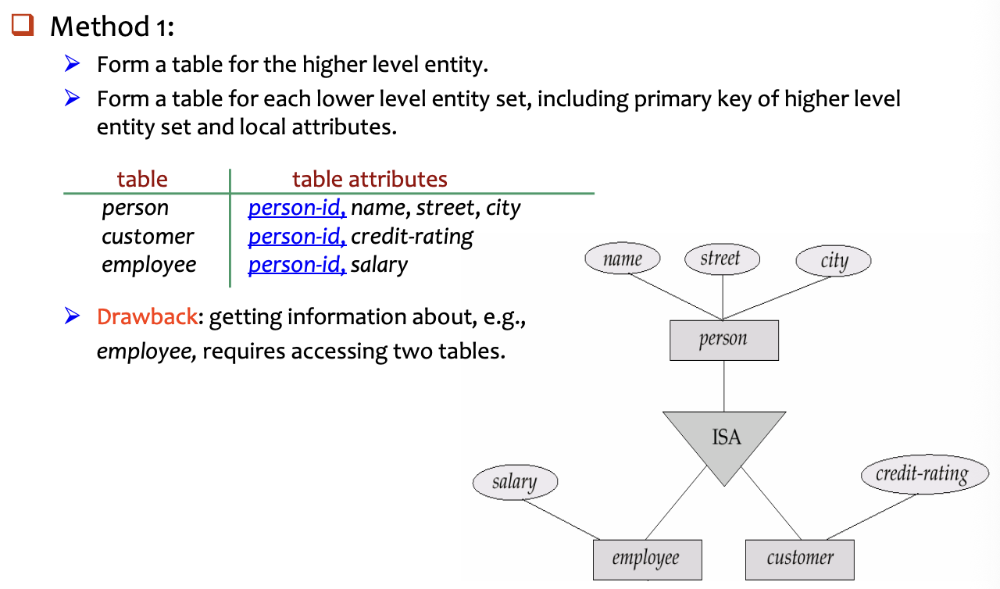
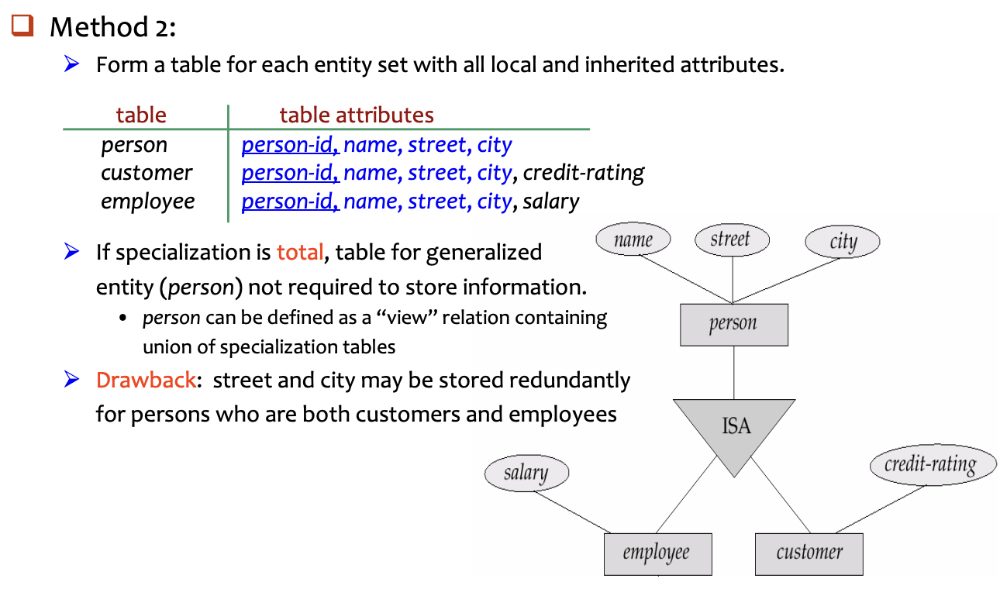